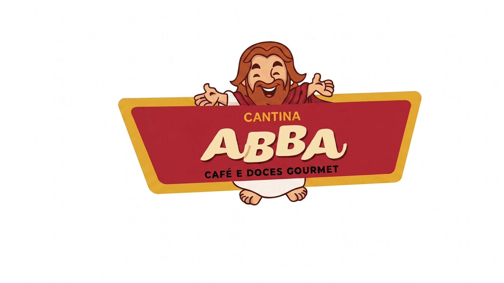

Inovação para a nossa comunidade escolar
O Cantina Digital é um projeto de extensão universitária focado em modernizar e agilizar o atendimento durante os intervalos. Nossa missão é reduzir filas, otimizar o tempo dos alunos e oferecer uma gestão transparente e eficiente para o refeitório da instituição.
Desenvolvido com tecnologias modernas, o sistema garante que cada pedido chegue quentinho e na hora certa, conectando tecnologia e alimentação de forma simples e intuitiva.

+500
Alunos Atendidos
0%
Tempo na Fila
100%
Gestão Digital
Desenvolvido por
Alunos de Análise e Desenvolvimento de Sistemas (ADS) - IFSP
Fabricio
Desenvolvedor Fullstack
Camila
UI/UX Design
Caio
Documentação e Requisitos
Kenzo
Banco de Dados
Alexandre
Backend / Lógica